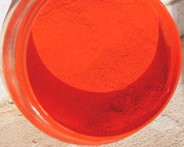

Vermillon(s)
et
cinabre
|

Le vermillon et le cinabre authentiques sont des pigments mais aussi
des poisons (voir ci-dessous Le malfaiteur
démasqué).
L'histoire du vermillon est liée à celle du cinabre
dont la composition est similaire (sulfure de
mercure naturel
HgS,
minerai du mercure), mais aussi à
celle du minium (à base l'oxyde de plomb, objet d'un article
séparé), car dès la Rome antique il y a eu confusion linguistique entre cinabre et
minium, tous deux intitulés "minium". Cette confusion
s'est prolongée durant le Moyen-âge ou le terme cinabre a à son tour
désigné différents rouges.
Sur le fond,
le vermillon se situerait plutôt dans la " famille des cinabres" et le minium
dans celle, tout aussi sinistre, des pigments au plomb. Toutes
ces substances sont toxiques.
|
Présentation
Naissance
du vermillon
Caractéristiques
Le
malfaiteur démasqué
Substituts
Type
de toxicité |
Le cinabre a probablement
été utilisé très tôt en Grèce, en Égypte (Fayoum), en Inde et en Chine
("vermillon de Chine"), puis à l'époque romaine, comme en attestent les fresques
de Pompéi. Il était fort coûteux, donc objet de trafics et pratiques
délictueuses de la part de certains peintres.
En Occident, il fut interdit au XIXème siècle à
cause de sa toxicité.
A lire
absolument :
passage
important in Courrier des Lecteurs
Lecture conseillée :
Le
cinabre sur Pourpre.com
Présentation
Attention les yeux, même s'il s'agit ici d'une imitation. D'un point de vue plastique, le cinabre et le vermillon sont extrêmement lumineux dans un
premier temps mais s'avèreraient fugaces (ils noirciraient en présence de
lumière), bien que ce point précis reste bizarrement sujet à polémique, certains
textes prétendant le contraire. Cela est peut-être dû au fait que ces
produits ont souvent été mélangés à d'autres colorants et substances diverses.
Au Moyen-âge, en Orient, les plus importants documents étaient
signés
avec une encre à base de cinabre (à Byzance, l'empereur seul pouvait
l'employer) tandis qu'en Occident (certaines sources
évoquent le XIIIème siècle, d'autres le XIIème) certaines enluminures étaient
réalisées à l'aide d'une encre à base de cinabre et de sanguine.
Les artistes de l'époque prenaient soin d'isoler cette substance trop réactive
aux autres
pigments à l'aide de vernis et de la protéger des rayons solaires en posant
par-dessus des glacis (garance).
Curieusement, différentes recettes médiévales évoquent souvent l'adjonction
assez dégoûtante de cérumen.

Ci-contre un vermillon vendu comme authentique en 2008 chez un détaillant
dans une capitale européenne. Le pot n'arborait aucun avertissement concernant
la toxicité de ce produit.
Naissance du
vermillon actuel
L'étymologie du mot vermillon provient du ver (vermilium =
petit ver). Voir carmin
de cochenille, kermès.
Il désigne alors très probablement des pigments rouges
n'ayant guère de rapports avec le cinabre. Le lien avec ce dernier semble se
faire en 1687, lorsqu'un nouveau pigment est créé (Schulte), faisant
référence et nommé "vermillon", cette fois en référence au
vermeil,
dit-on. Le terme "vermillon de cinabre" est parfois employé, en principe pour
préciser que l'on parle d'une version au mercure.
Il était récupéré sur les parois d'un pot d'argile empli de soufre et de
mercure et chauffé. Il s'agissait donc d'un gaz condensé, le sulfure de
mercure. Rien de chimiquement différent du cinabre si ce n'est que le vermillon
était produit artificiellement alors que le cinabre était disponible à l'état naturel
(extrait de parois rocheuses en Espagne à Almaden, également en Italie, en
Algérie, notamment à Ferdjioua et l'on nous signale aussi sa présence à
Madagascar, information non-confirmée). Dans les deux cas - extraction naturelle ou
synthèse, cinabre ou vermillon -, coûtait cher.
Caractéristiques
Lecture conseillée :
Le
vermillon sur Pourpre.com

Le vermillon authentique et le cinabre sont incompatibles avec le plomb,
principal siccatif de la peinture à l'huile, car ils contiennent du
soufre. De plus, ils seraient aussi réactifs, selon certaines sources non
confirmées, aux émanations sulfureuses et/ou à certaines conditions
atmosphériques, sans parler de l'effet de la lumière : ils
virent au noir, dit-on.
Le vermillon peut être préparé par voie
sèche (85 parts de mercure pour 15 parts de soufre) ou par voie humide, donnant
de meilleurs résultats. Dans ce mode de fabrication (peut-être encore employé
en Chine), le mélange de base, brun
au départ, est constitué de soufre, de mercure, de soude
et de potasse que l'on réchauffe.
En Chine, encore aujourd'hui dit-on (information non
confirmée), on produirait un vermillon en mélangeant à feu doux du soufre et
du mercure (voir ci-dessus préparation par voie sèche).
Le vermillon
de Chine commun que l'on peut trouver en France, imitation de
couleur bizarrement rosâtre, n'a probablement
qu'un très lointain rapport avec le véritable produit.
Concernant les imitations, chromatiquement parlant le vermillon se décline : dans certaines gammes de couleurs, il est
franchement orangé. Une teinte "rouge vermillon" et non "vermillon", un peu plus rouge, est alors
parfois proposée.
Il existe aussi un intitulé "vermillon de France" et bien sûr comme pour toutes
les imitations tout est possible.
Un vert cinabre est disponible dans le commerce. Il n'est pas annoncé comme
toxique. Il s'agit possiblement - espérons-le - de l'imitation d'une version de cinabre dont le
mercure se trouverait dans un autre état, associé à un autre
élément que le soufre. Rien de sûr.
Le malfaiteur
démasqué
Démasqué, masqué à nouveau, démasqué à nouveau. Comme la céruse (par exemple, les cas n'étant pas
rares), le cinabre/vermillon ressemble à un malfaiteur changeant de nom, entretenant
un flou sur son identité. Cependant, il semble de plus en plus difficile
aujourd'hui de l'ignorer. Lire à ce sujet un
important passage du
Courrier des Lecteurs qui examine la situation actuelle.
Utilisés en peinture à l'huile (malgré les incompatibilités), en aquarelle et en gouache, ce redoutable
poison ne disparaîtra pour la plus grosse part que progressivement, au début du XXème siècle. De nos
jours encore, un cinabre portant l'étiquette "TOXIQUE", dont nous
ignorons la composition, se vend dans les magasins (une gouache de marque
extra-fine). D'autres ne portent aucune étiquette et l'on trouve des pigments
présentés comme authentiques.
L'usage de cinabre/vermillon ou de produits apparentés persisterait aussi dans
certaines régions d'Extrême Orient. L'histoire du cinabre n'est donc pas
terminée.
On l'a dit, le cinabre est le minerai, c'est en théorie un sel de soufre et de
mercure. En fait, comme le souligne François Perego
et différentes autres sources, le sel HgS
(sulfure de mercure) serait en soi une forme stable,
sans doute la plus stable, ce qui est rassurant. Cependant, du mercure libre peut être présent de même
que des composés divers, sans parler des variétés
organiques hautement toxiques secrétées par des microorganismes (dans les sols
et dans l'eau), tels le mono et le diméthylmercure.
On est en effet dans le domaine de l'extrême. La
catastrophe de Minamata a montré les conséquences
de l'intoxication au mercure via ses dérivés carbonés, en l'occurrence secrétés
et véhiculés au long d'une chaîne alimentaire qui mène à nous, humains. Afin de
prendre la mesure de l'ampleur des dégâts induits par ce processus, on peut notamment regarder une
vidéo de 1975 accessible dans les archives publiques de l'INA (lien)
ou une autre sur YouTube (lien
- attention, images dures), une qui explique l'action du mercure sur les
neurones par dénudement des microtubules (lien),
et une dernière, en japonais mais suffisamment illustrée pour se faire une idée
du processus biologique et des contre-mesures mises en oeuvre sur les lieux
contaminés (lien).
Différents textes mentionnent, bien avant cette catastrophe, des maladies des
mineurs et autres travailleurs du cinabre ou du mercure. Ces maladies sont identifiées de
longue date dit-on ; le problème n'est pas nouveau.
La plupart des nombreux composés dérivés du "vif-argent" (un vieux
surnom) sont toxiques. Ce
métal
est devenu un enjeu de santé publique à l'échelle internationale.
Substituts
Le rouge de cadmium clair
authentique est un substitut intéressant : il est stable, couvrant et bien moins
toxique quoique légèrement polluant en grande quantité et un peu coûteux. Certaines imitations du vermillon en sont
pourvues. Les autres, plus transparentes, sont azoïques.
Voir Imitations.
Voir laques anciennes.
Type de toxicité
Le vermillon de cinabre serait modérément toxique par contact cutané et
radicalement
toxique par ingestion ou inhalation. Le mercure agirait sur le foie
et le système nerveux.
Voir aussi Minium.
Retour
début de page